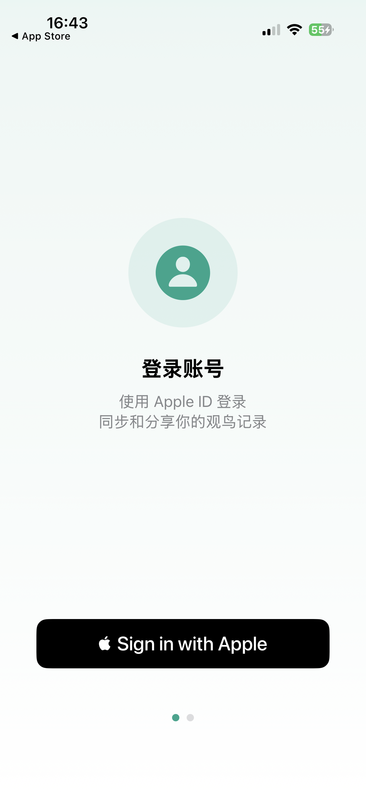
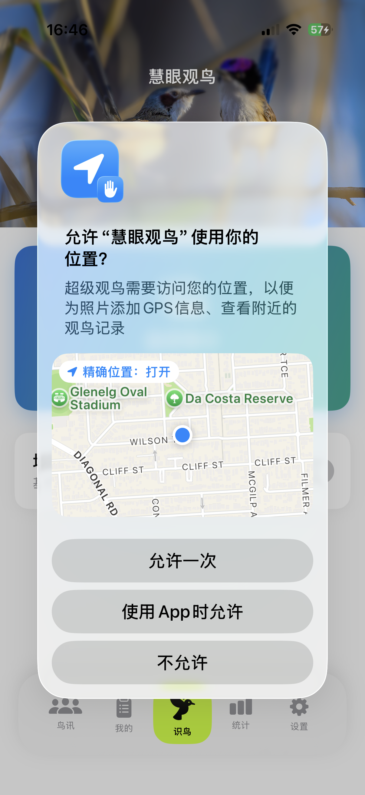
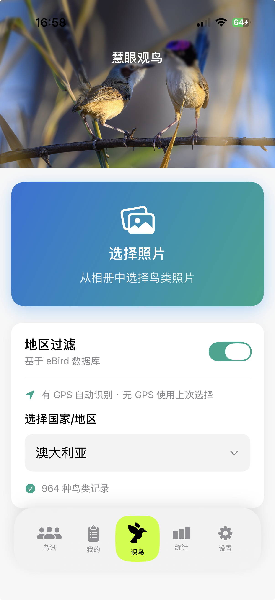
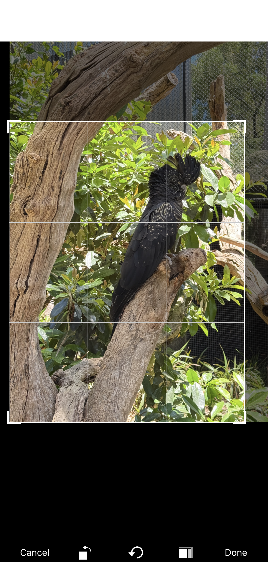
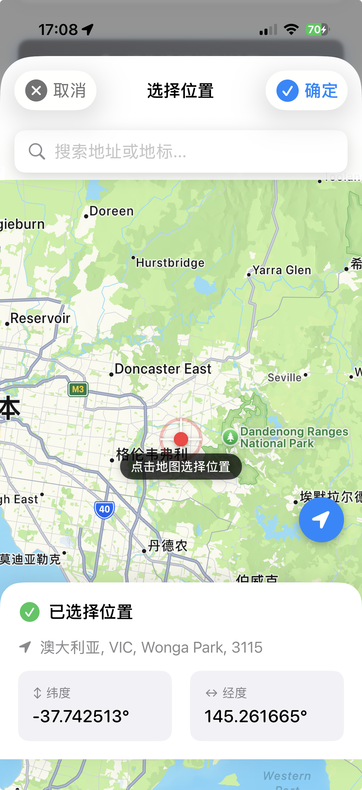
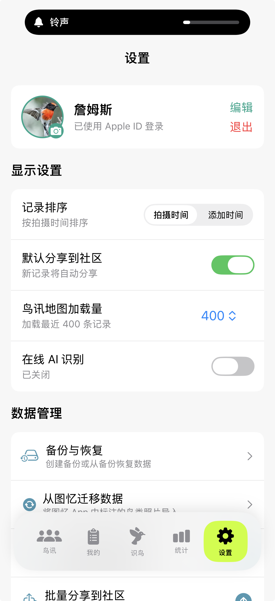

入门问题 Getting Started
Apple ID 登录是苹果官方提供的安全认证方式，有以下优势： Apple ID is Apple's official secure authentication method with these benefits:
- 无需记忆额外密码 No extra password to remember
- 数据自动跨设备同步（通过 iCloud） Auto-sync across devices (via iCloud)
- 国内国外用户都可以使用 Works worldwide
- 隐私保护：可选择隐藏真实邮箱 Privacy: Option to hide your real email

永久免费。没有广告，没有 VIP，没有 Pro 版，没有任何套路。所有功能完全免费使用。 Forever free. No ads, no VIP, no Pro version, no tricks. All features are completely free.
支持运行 iOS 18.0 或更高版本的 iPhone。由于 AI 模型需要较新的神经引擎，暂不支持较旧设备。 Supports iPhone running iOS 18.0 or later. Older devices are not supported due to AI model requirements for newer Neural Engine.
隐私与权限 Privacy & Permissions
慧眼观鸟需要访问照片图库来选择鸟类照片进行识别。你可以选择： SuperBirder needs photo access to select bird photos for identification. You can choose:
- 限制访问：每次只选择特定照片 Limited Access: Select specific photos each time
- 允许完全访问：方便快速选择任意照片 Full Access: Convenient access to all photos

照片仅在本地处理，不会上传到任何服务器。 Photos are processed locally only, never uploaded to any server.
位置权限用于以下功能： Location permission is used for:
- 为照片添加 GPS 信息（如果照片本身没有） Add GPS info to photos (if not present)
- 查看附近的观鸟记录 View nearby bird sightings
- 在地图上定位当前位置 Locate current position on map

不会。分享到社区时： No. When sharing to community:
- 精确 GPS 坐标不会上传 Exact GPS coordinates are NOT uploaded
- 备注内容不会上传 Notes are NOT uploaded
- 仅显示大致地区（城市级别） Only approximate region (city level) is shown
你的精确位置和个人备注仅保存在本地设备上。 Your exact location and personal notes are stored locally only.
你的观鸟记录存储在两个地方： Your bird records are stored in two places:
- 本地设备：完整记录，包含精确 GPS 和备注 Local device: Full records with exact GPS and notes
- iCloud：通过苹果 CloudKit 同步，用于跨设备和社区分享 iCloud: Via Apple CloudKit for cross-device sync and community sharing
社区数据由苹果公司的 iCloud 服务管理，与慧眼观鸟应用本身无关。 Community data is managed by Apple's iCloud service, not by SuperBirder.
鸟类识别 Bird Identification
慧眼观鸟采用 BirdTrace FastViT-MA36 混合视觉 Transformer 模型，并结合 YOLO11m 目标检测定位器，覆盖全球权威 10,480 种 鸟类物种。模型全量部署在 iPhone 本地 Apple Neural Engine（ANE 神经网络引擎），100% 离线运行、无需网络、毫秒级推断，并融合 GPS 地理先验加权，有效降低相似鸟种误判。 SuperBirder uses the on-device BirdTrace FastViT-MA36 Hybrid Vision Transformer combined with YOLO11m object detection, covering 10,480 bird species globally. Fully deployed on the Apple Neural Engine (ANE), it runs 100% offline with millisecond latency and GPS geo-prior weighting.
不需要。AI 鸟类识别完全离线运行，使用苹果原生 CoreML 模型，在设备本地完成识别，通常只需 1-2 秒。 No. AI bird identification runs completely offline using Apple's native CoreML model, processed locally on device in about 1-2 seconds.
置信度受多种因素影响： Confidence is affected by various factors:
- 照片质量（清晰度、曝光） Photo quality (sharpness, exposure)
- 拍摄角度（正面通常比背面更容易识别） Angle (front view usually easier than back)
- 鸟类是否完整可见 Whether the bird is fully visible
- 相似物种的区分难度 Difficulty distinguishing similar species
90% 以上可直接采用，70-90% 建议核对，70% 以下建议手动确认。 90%+ is reliable, 70-90% verify recommended, below 70% manual check suggested.
开启 eBird 过滤后，系统会优先显示你选择的国家/地区常见的鸟种，从而提高识别准确率。系统会记住你的预设。 When enabled, the system prioritizes species commonly found in your selected country/region, improving accuracy. Your preference is saved.

你可以： You can:
- 从候选列表中选择正确的鸟种 Select the correct species from the candidate list
- 手动输入鸟种名称进行搜索 Manually search and input the species name
- 点击「编辑识别框」调整识别区域后重新识别 Tap "Edit Detection Box" to adjust the area and re-identify

使用「编辑识别框」功能，手动框选你想要识别的那只鸟，系统会针对框选区域重新进行识别。 Use "Edit Detection Box" to manually select the bird you want to identify. The system will re-identify based on your selection.
记录管理 Record Management
可能的原因： Possible reasons:
- 相机没有开启 GPS 记录功能 Camera GPS recording is disabled
- iPhone 相机的位置权限被关闭 iPhone camera location permission is off
- 照片是从网上下载或他人分享的 Photo was downloaded or shared by others
没有 GPS 时，你可以在保存记录时手动搜索地点或在地图上选点。 Without GPS, you can search for a location or pick on the map when saving.

「生涯新种」是指你人生中第一次拍摄到的鸟种，以拍摄时间为准，而不是添加记录的时间。 "Life Bird" means a species you photographed for the first time ever, determined by capture time, not when you added the record.
生涯新种会在记录列表中显示皇冠 👑 标记，这是观鸟者的重要里程碑。 Life birds are marked with a crown 👑 badge in your records - an important milestone for birders.
创建备份： Create backup:
设置 → 备份与恢复 → 创建备份 Settings → Backup & Restore → Create Backup
恢复备份： Restore backup:
选择备份文件 → 恢复 → 重启应用 Select backup file → Restore → Restart app

在「我的」页面点击记录卡片进入详情页，可以编辑鸟种名称、地点、备注，或删除该记录。 Tap a record card in "My" page to enter details, where you can edit species name, location, notes, or delete the record.
社区相关 Community
保存记录时，勾选「分享到社区」选项即可。你也可以在设置中开启默认分享，这样每次保存都会自动分享。 Check "Share to Community" when saving a record. You can also enable default sharing in Settings to auto-share every save.
社区数据存储在苹果公司提供的 iCloud CloudKit 服务上，由苹果公司管理，与慧眼观鸟应用本身无关。 Community data is stored on Apple's iCloud CloudKit service, managed by Apple, not by the SuperBirder app itself.
为了节省带宽和存储空间，分享到社区的照片会进行压缩。你的本地记录保存的是原始画质，比云端高一倍以上。 Community photos are compressed to save bandwidth and storage. Your local records keep original quality, 2x better than cloud versions.
其他问题 Other Questions
设置 → 点击你的昵称 → 输入新昵称 → 保存 Settings → Tap your nickname → Enter new nickname → Save
可以通过以下方式联系： You can contact via:
- 邮箱：james@jamesphotography.com.au Email: james@jamesphotography.com.au
- GitHub：github.com/jamesphotography GitHub: github.com/jamesphotography
目前仅支持 iOS。由于应用使用苹果专有的 CoreML 技术和 iCloud 同步，暂无 Android 版本计划。 Currently iOS only. Due to Apple-specific CoreML technology and iCloud sync, there are no plans for an Android version.